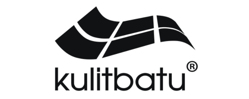
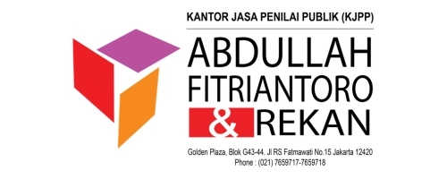
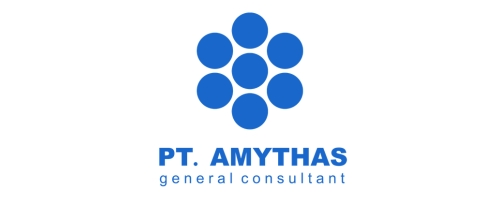
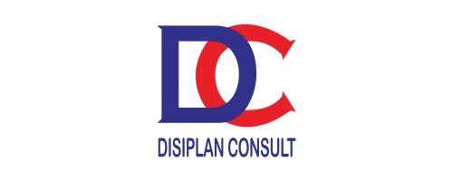
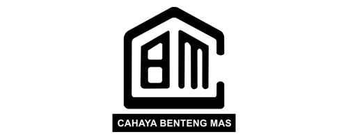
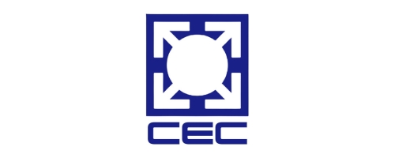

Tentang Mitra Kerja
Halaman ini didedikasikan bagi para pihak yang bekerjasama dengan INKINDO DKI Jakarta baik untuk Kontraktor, Produsen, Suplier dan lain-lain.
Apabila Bapak/Ibu berminat menjadi Mitra Kerja INKINDO DKI Jakarta dapat menghubungi Sekretariat INKINDO DKI Jakarta.
Maksud & Tujuan Mitra Kerja
Dengan halaman mitra kerja ini diharapkan dapat memberikan manfaat khususnya bagi Anggota, para Mitra Kerja dan Masyarakat pada umumnya, baik dalam mencari barang/jasa maupun informasi yang dibutuhkan untuk kegiatan usaha terkait usaha jasa konsultansi.
Bagi Anggota INKINDO
Mempermudah 900+ badan usaha konsultan dalam mengakses referensi material bersertifikasi, teknologi terkini, penawaran harga korporat terbaik, serta vendor pelaksana yang terpercaya.
- Akses langsung ke katalog produk & spesifikasi teknis
- Dukungan transfer keahlian & workshop material
- Jaminan mutu pengadaan dalam rancang bangun
Bagi Para Mitra Kerja
Membuka jembatan interaksi promosi langsung dengan para perencana, perancang, pengawas, dan konsultan manajemen proyek di seluruh DKI Jakarta dan proyek nasional.
- Publikasi resmi di portal direktori INKINDO DKI
- Peluang business matching & sponsorship event
- Sinergi penawaran pada proyek pemerintah & swasta
Bagi Masyarakat Luas
Mendorong terwujudnya hasil karya pembangunan infrastruktur dan gedung yang lebih kokoh, aman, ramah lingkungan, serta memenuhi standar kepatuhan nasional.
- Standar konstruksi yang transparan dan akuntabel
- Penerapan material ramah lingkungan (Green Building)
- Hasil investasi proyek yang berdaya tahan lama
Syarat Mitra Kerja
Program kemitraan ini terbuka bagi seluruh pelaku usaha yang berkomitmen menjalin kerjasama secara profesional, transparan, dan berintegritas tinggi bersama DPP INKINDO DKI Jakarta.
verified_user Siapa yang Dapat Bermitra?
Kontraktor Pelaksana, Produsen Material Bahan Bangunan, Suplier Peralatan & Mesin, Penyedia Solusi Software/IT Desain (BIM, CAD), Perbankan, Penjaminan/Asuransi Proyek, dan Laboratorium Pengujian Teknis.
Badan Usaha Resmi
Perusahaan berbadan hukum sah di Indonesia (PT, CV, Koperasi, Distributor Resmi / Agen Tunggal) dengan domisili usaha yang jelas.
Legalitas & Izin Usaha
Memiliki Nomor Induk Berusaha (NIB) berbasis risiko aktif, Nomor Pokok Wajib Pajak (NPWP) Badan, serta izin operasional sektor terkait.
Bidang Usaha yang Relevan
Bergerak di bidang yang menunjang aktivitas jasa konstruksi, jasa konsultansi keteknikan, dan layanan penunjang profesional lainnya.
Penunjukan PIC Resmi
Menunjuk Person in Charge (PIC) tetap sebagai narahubung resmi dan berwenang melakukan koordinasi teknis dengan INKINDO DKI Jakarta.
Komitmen Mutu & SMAP
Menyediakan produk/jasa berstandar SNI/internasional dan berkomitmen mematuhi Sistem Manajemen Anti Penyuapan (ISO 37001).
Registrasi Administratif
Mengisi formulir pendaftaran kemitraan secara daring dan menandatangani kesepahaman kemitraan bersama sekretariat.
Ketentuan Mitra Kerja
Seluruh hubungan kemitraan diatur secara profesional untuk melindungi reputasi asosiasi serta menjamin keterbukaan hak dan kewajiban kedua belah pihak.
1. Prinsip & Asas Kemitraan
Hubungan kemitraan bersifat non-eksklusif dan berorientasi pada sinergi saling menguntungkan (mutual benefit). Kemitraan tidak membatasi independensi para konsultan anggota INKINDO dalam menentukan keputusan teknis.
2. Hak & Fasilitas Mitra
Mitra resmi berhak mencantumkan logo di direktori website INKINDO DKI, mengikuti agenda knowledge sharing / seminar teknis, serta berpeluang mempresentasikan inovasi produk dalam temu anggota asosiasi.
3. Kewajiban & Akuntabilitas
Mitra berkewajiban memberikan informasi spesifikasi material/jasa yang akurat, menjamin ketersediaan barang/layanan purnajual, serta menjaga harga yang kompetitif bagi para konsultan anggota.
4. Masa Berlaku & Evaluasi
Status kemitraan berlaku selama 1 (satu) tahun kalender sejak tanggal pengesahan registrasi. DPP INKINDO DKI Jakarta melaksanakan evaluasi berkala untuk perpanjangan masa kemitraan berikutnya.
5. Integritas & Etika Bisnis
Mitra wajib menjunjung tinggi etika bisnis yang sehat, tidak melakukan praktik monopoli, gratifikasi ilegal, atau penyuapan yang bertentangan dengan standar SMAP ISO 37001 dan hukum Republik Indonesia.
6. Pengakhiran Kemitraan
DPP INKINDO DKI Jakarta berhak menghentikan kemitraan secara sepihak apabila mitra terbukti melakukan pelanggaran hukum, wanprestasi kontrak, atau merugikan harkat dan martabat asosiasi.
Mitra Kerja Terdaftar INKINDO DKI Jakarta
Sinergi terpercaya bersama perusahaan-perusahaan terkemuka di sektor industri material, teknologi rancang bangun, dan jasa konstruksi nasional.







